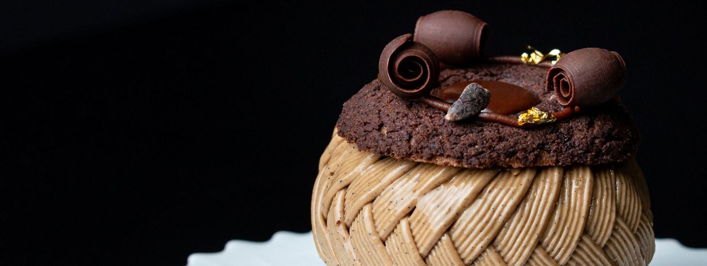

Festivals · Food
Salon du Chocolat Paris 2027
- Dates
- –
- Venue
- Paris Expo Porte de Versailles
- Location
- Paris, France
- Format
- In-person
- Category
- Food
- Industry
- Food
- Organiser
- Salon du Chocolat
- Official website
- https://www.salon-du-chocolat.com/
About
Topics: chocolate, food fair.
Sources
Hotels
- Domaine de la Reine Margot, MGallery — 5★ · 3 cours de la Reine Margot, 92130 Issy-les-Moulineaux, France · 1.1 km from the venue · Price on request
- Square Hôtel Paris — 5★ · 3 RUE DE BOULAINVILLIERS, 75016 Paris, France · 2.7 km from the venue · Price on request
- Molitor Hôtel & Spa Paris, MGallery — 5★ · 13 rue Nungesser et Coli, 75016 Paris, France · 3.2 km from the venue · Price on request
- Novotel Paris Porte de Versailles — 4★ · 4 avenue de la Porte de la Plaine, 75015 Paris, France · 0.3 km from the venue · Price on request
- Oceania Paris Porte de Versailles — 4★ · 6 rue Ernest Renan, 92130 Issy-les-Moulineaux, France · 0.4 km from the venue · Price on request